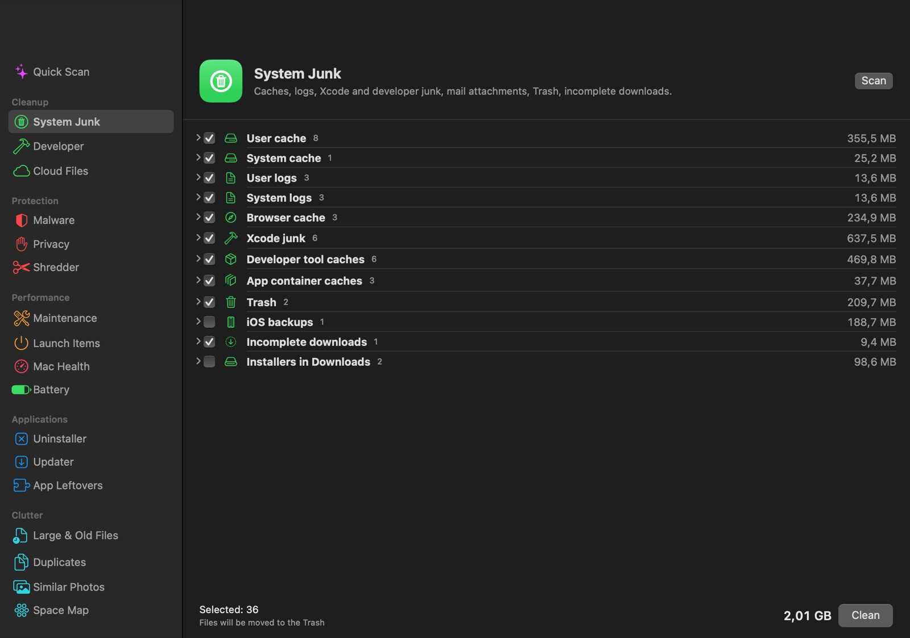

Guide · Disk space
How to clear System Data on a Mac — safely
“System Data” is the grey bar in your Mac's storage settings that never seems to stop growing. Here is what it actually contains, what you can delete without breaking anything, and how to do it — by hand or in one scan.
What “System Data” really is
macOS sorts your disk into categories such as Applications, Documents and Photos. Everything that does not fit one of them lands in System Data (called “Other” on older macOS). It is a catch-all, not one thing, and usually includes:
- Caches — temporary files apps keep to start faster (
~/Library/Caches,/Library/Caches). - Logs and crash reports —
~/Library/Logs,/Library/Logs. - Local Time Machine snapshots — copies macOS keeps on the internal disk between backups.
- iPhone and iPad backups —
~/Library/Application Support/MobileSync/Backup. - Developer files — Xcode DerivedData, simulators and runtimes, Docker images, package manager caches.
- App data — what apps store in Application Support and their sandbox containers, including large downloaded models for local AI apps.
- Virtual machines and other large files that macOS does not classify.
Step 1: Look before you delete
Open System Settings → General → Storage. Wait for the bars to finish calculating, then use the ⓘ buttons next to each category. Apple's own recommendations (Store in iCloud, Empty Trash Automatically) are the safest first wins.
Then restart the Mac. A restart clears temporary files and lets macOS release some purgeable space it was keeping, so the System Data number often drops a little on its own.
Step 2: Remove local Time Machine snapshots
If you use Time Machine, macOS keeps local snapshots on the internal disk. They are deleted automatically when space runs low, but they can make System Data look huge. List them in Terminal:
tmutil listlocalsnapshots /To ask macOS to thin them now:
tmutil thinlocalsnapshots / 999999999999 4Removing local snapshots does not touch the backups on your Time Machine drive — you only lose the ability to roll back to those local points in time.
Step 3: Delete old iPhone and iPad backups
Connect the device, select it in Finder's sidebar and click Manage Backups…. Delete the backups you no longer need. Each one can be several gigabytes, especially for older devices you no longer own.
Step 4: Clear caches and logs (carefully)
In Finder, press ⌘⇧G and go to ~/Library/Caches. You can delete the contents of app folders you recognise — the apps rebuild what they need. Quit those apps first, and do the same for ~/Library/Logs.
Do not delete the Library folder itself, anything under /System, whole folders in ~/Library/Containers, or your iCloud Drive folder. If you are not sure what a folder is, leave it.
Step 5: Check developer files
If you write code, developer tools are usually the biggest part of System Data. Xcode alone — DerivedData, simulators, runtimes and device support files — often takes tens of gigabytes. Docker images and node_modules folders add more. See How to free up space from Xcode for the exact steps and commands.
Step 6: Find the big, forgotten files
Large items hide in places the Storage panel does not explain well: virtual machines (Parallels, UTM, VMware), downloaded AI models (Ollama, LM Studio, Hugging Face), old installers in Downloads, and Mail attachments. A disk map or a large-file finder makes them obvious in seconds.
The faster way: one scan, with undo
MyOpenCleaner is a free, open-source Mac cleaner that does all of the above in one place, and shows you exactly what it found before anything is removed:
- Quick Scan and System Junk list caches, logs, container caches, Mail attachments, old installers and iOS backups, each with its size.
- Developer covers Xcode, simulators, Docker, package caches and AI models.
- Mac Health shows how much space is purgeable, and Maintenance can thin Time Machine snapshots.
- Large & Old Files and Space Map find virtual machines and forgotten downloads.
- Removed files go to the Trash, and Undo puts a whole clean back.

FAQ
Is it safe to delete System Data on a Mac?
Parts of it are. Caches, logs, old iPhone backups, local Time Machine snapshots and developer build files can be removed; macOS and apps recreate what they need. Never delete the Library folder itself, files in /System, or whole app containers.
Why does System Data keep growing?
Apps keep adding caches and logs, Time Machine keeps local snapshots between backups, and developer tools store large build products. macOS also keeps some space as purgeable and frees it only when the disk runs low.
Does restarting a Mac clear System Data?
A restart clears temporary files and lets macOS release purgeable space, so System Data often shrinks a little. It does not remove caches, backups or snapshots that macOS considers in use.
Clear System Data in one scan
Free and open source. Nothing is removed until you choose — and every clean can be undone.
Get MyOpenCleaner